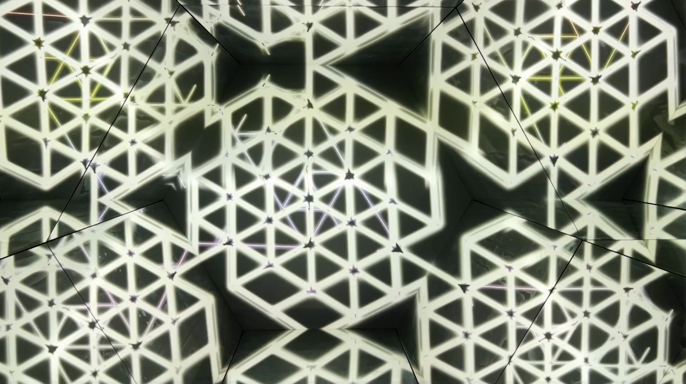
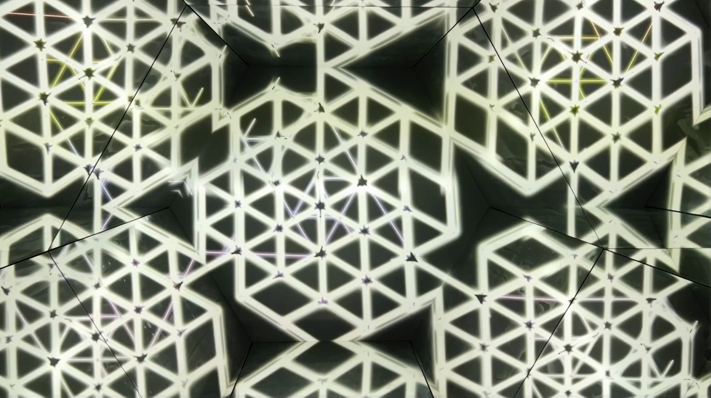

Hexucinatory @ DigitalDetox
This is a space of disembodiment, a space that is pending for the observer's presence to use visitors behaviour as an input. Deprivation room controlled by person position and behaviour inside. The installation setting at space is the hexagonal mirror room which is multiplying generative visuals and leads to infinite projection of internal psycho reflections.
Techs: kinect, 2 projectors, touchdesigner, ableton
Digital Detox exhibition (see below)
https://www.instagram.com/digitaldetox.click/
in Tbilisi Holoseum space
https://www.instagram.com/holoseumarts/
When it's pending it works like a black'n'white kaleidoscope of never repeating l-patterns personifying night starry universe's depth attracting to its fundamentals, pacifying melodic drone sounds.
 


TV reportage on Georgian TV
Digital Detox
Digital technologies allow to create breathtaking imaginary environments that help us look at ourselves from different perspective, question some rigid patterns of our perception.
Following that intention our team https://kargat.studio have invited some talent georgian artists to speak out in their works within this concept and crafted 8 multimedia artworks at the biggest commercial digital art space in Tbilisi, Georgia.